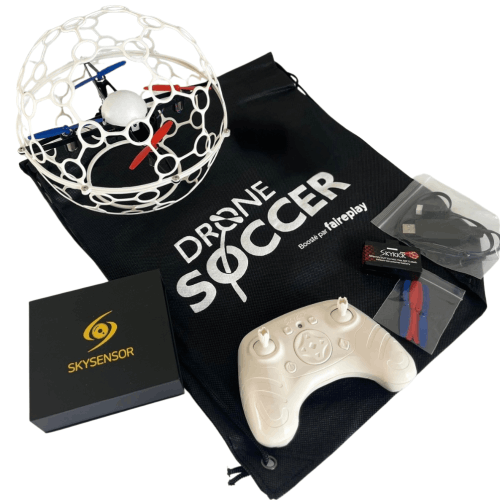
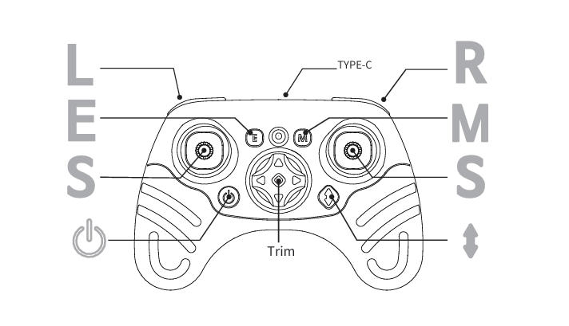
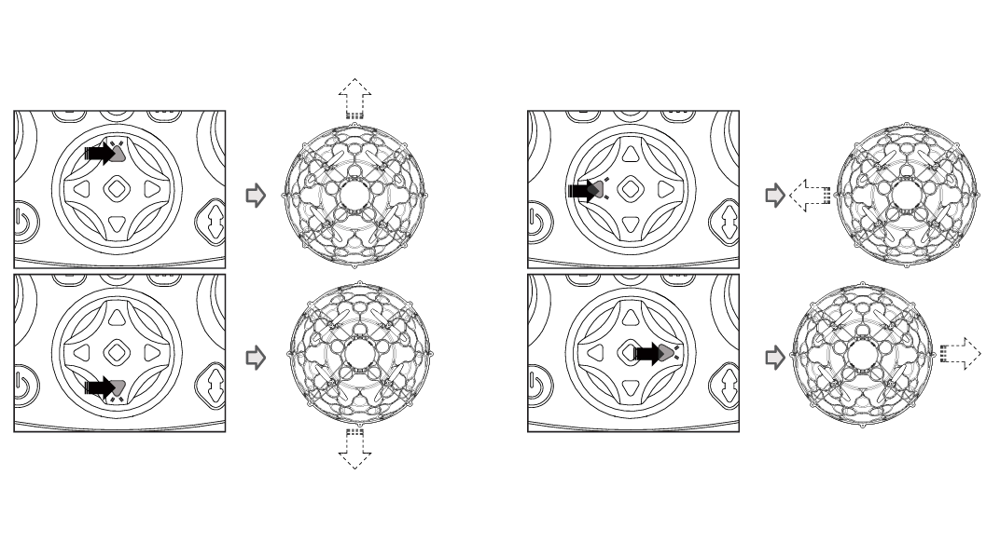

A SkyKick EVO egy olyan fejlett, programozható drón, amely a beépített szenzoraival és a Python-alapú vezérlés lehetőségével hidat képez a látványos repülési manőverek és a komplex robotikai programozás világa között. A SkyKick EVO egyik legizgalmasabb felhasználási területe a drónfoci, amely az innovatív technológiát ötvözi a csapatsportok izgalmával.

A távirányítóval vezetheted a drónt, vagy a számítógéphez csatlakoztatva kódolásra használhatod.



További információkat a drón reptetéséről és haszálatáról megtalálod az alábbi linken:
SkyKick EVO - User Guide

A SkyKick EVO Scratch-alapú programozása lehetővé teszi, hogy színes kódblokkok egyszerű egymáshoz illesztésével alkoss saját algoritmusokat, így játékos formában sajátíthatod el a drónfocihoz szükséges taktikai manőverek alapjait.
Online programozás
Letöltés: weboldalról
A drónfoci egy izgalmas, high-tech csapatsport, amely az e-sportok dinamikáját és a hagyományos labdarúgás taktikai elemeit ötvözi, miközben a SkyKick EVO-hoz hasonló, speciális védőkerettel ellátott drónokat használ.

A védőjátékosok feladata, hogy fizikai ütközésekkel vagy az út elzárásával megakadályozzák az ellenfél csatárát a pontszerzésben.
A drónok programozható LED fényei segítik a csapattársak és az ellenfelek gyors azonosítását a levegőben.
A SkyKick EVO drónok esetében a Python vagy Scratch alapú programozás lehetővé teszi egyedi repülési profilok és stabilabb irányítás kidolgozását a versenyekre.

Free AI Website Maker